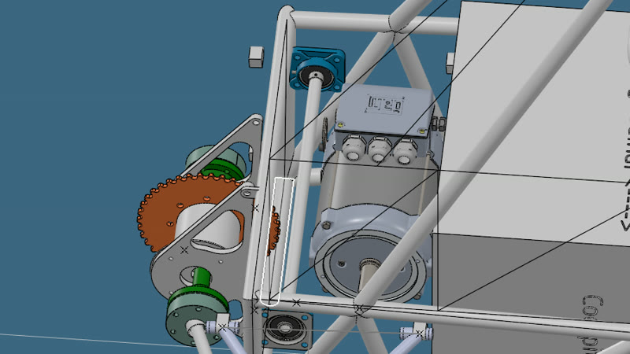

Powertrain hardware
Transmission architecture, chain stages and countershaft sizing for a single-motor electric car, from trade study to geometry locked in CAD.
Mechanical Engineering · ITA, Brazil
I lead powertrain on an electric Formula SAE car. I size the transmission, write the lap simulation that picks the gear ratio, and take the car to the track to check the model against what it actually does.
Three kinds of work on the same car. The design needs a gear ratio, the ratio needs a model, and the model needs data from the track.
Transmission architecture, chain stages and countershaft sizing for a single-motor electric car, from trade study to geometry locked in CAD.
A MATLAB tool I wrote that turns a final drive ratio into lap times and event points, calibrated with data from our own car.
Test procedures, phone-based telemetry and a held-out lap that measures how far the model sits from the real car.

Transmission design for the team's next electric car, backed by a lap-time simulator I built and by track tests on the current car.
Would George Russell have won the 2026 Italian GP by pitting under the lap-28 Virtual Safety Car? A counterfactual race model built on FastF1 timing and telemetry.